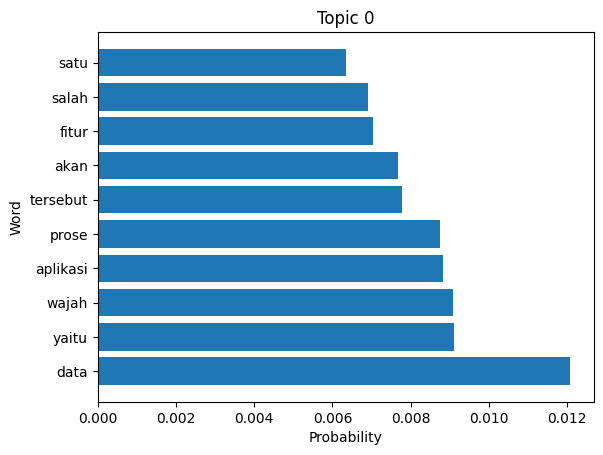
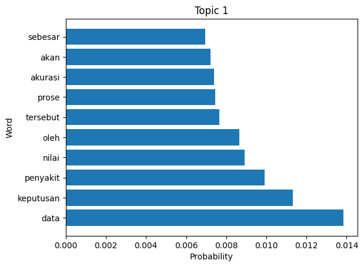
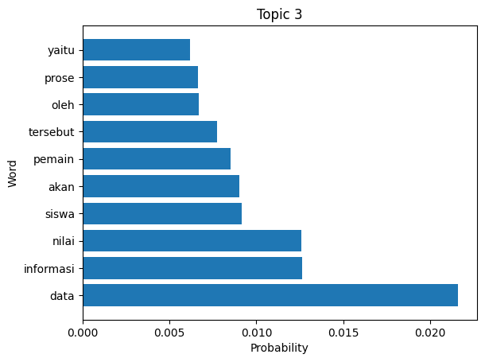
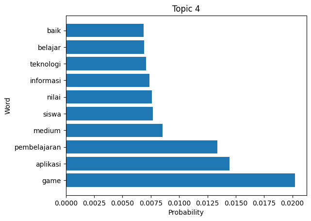
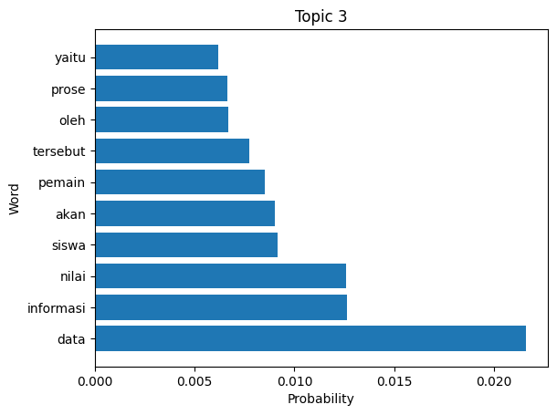
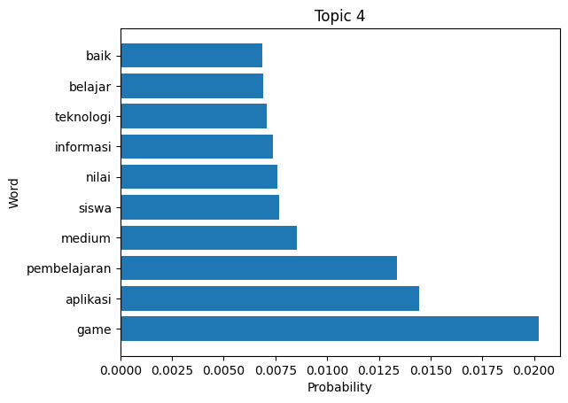
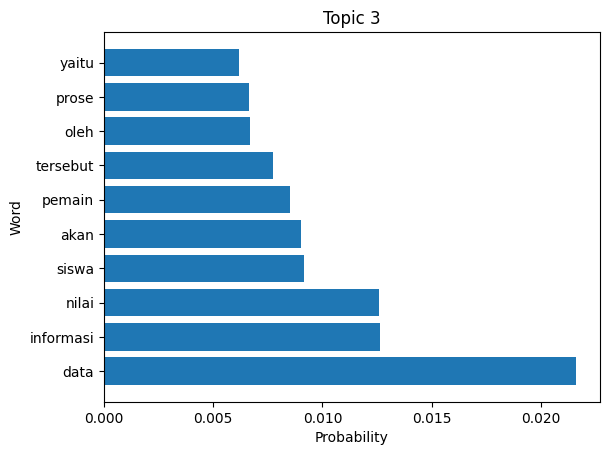
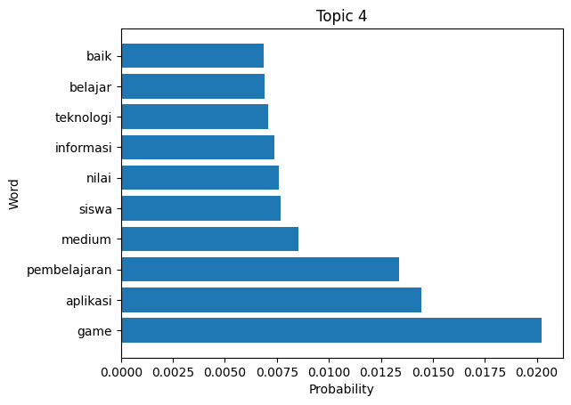

Proporsi Teks#
import pandas as pd
from google.colab import drive
drive.mount('/content/drive')
csv_path = '/content/drive/MyDrive/PPW/Data PTA Teknik Informatika.csv'
df = pd.read_csv(csv_path)
---------------------------------------------------------------------------
KeyboardInterrupt Traceback (most recent call last)
<ipython-input-1-a76f55e6b0db> in <cell line: 3>()
1 import pandas as pd
2 from google.colab import drive
----> 3 drive.mount('/content/drive')
4
5 csv_path = '/content/drive/MyDrive/PPW/Data PTA Teknik Informatika.csv'
/usr/local/lib/python3.10/dist-packages/google/colab/drive.py in mount(mountpoint, force_remount, timeout_ms, readonly)
101 def mount(mountpoint, force_remount=False, timeout_ms=120000, readonly=False):
102 """Mount your Google Drive at the specified mountpoint path."""
--> 103 return _mount(
104 mountpoint,
105 force_remount=force_remount,
/usr/local/lib/python3.10/dist-packages/google/colab/drive.py in _mount(mountpoint, force_remount, timeout_ms, ephemeral, readonly)
130 )
131 if ephemeral:
--> 132 _message.blocking_request(
133 'request_auth', request={'authType': 'dfs_ephemeral'}, timeout_sec=None
134 )
/usr/local/lib/python3.10/dist-packages/google/colab/_message.py in blocking_request(request_type, request, timeout_sec, parent)
174 request_type, request, parent=parent, expect_reply=True
175 )
--> 176 return read_reply_from_input(request_id, timeout_sec)
/usr/local/lib/python3.10/dist-packages/google/colab/_message.py in read_reply_from_input(message_id, timeout_sec)
94 reply = _read_next_input_message()
95 if reply == _NOT_READY or not isinstance(reply, dict):
---> 96 time.sleep(0.025)
97 continue
98 if (
KeyboardInterrupt:
data = pd.DataFrame (df['abstrak'])
print (data)
abstrak
0 Sistem informasi akademik (siakad) merupaka...
1 Berjalannya koneksi jaringan komputer dengan l...
2 Web server adalah sebuah perangkat lunak serve...
3 Penjadwalan kuliah di perguruan tinggi me...
4 Seiring perkembangan teknologi yang ada diduni...
.. ...
850 Toko tas deeolshop menjual berbagai macam tas ...
851 Sepak bola adalah salah satu olahraga yang saa...
852 Perguruan tinggi merupakan salah satu jenjang ...
853 Investasi saham selama ini memiliki resiko ker...
854 Information retrieval (ir) merupakan pengambil...
[855 rows x 1 columns]
import nltk
from nltk.corpus import stopwords
from nltk.stem import WordNetLemmatizer
from nltk.tokenize import word_tokenize
import string
def cleaning(text):
# Tokenize the text into words
tokens = word_tokenize(text.lower())
# Remove punctuation and numbers
table = str.maketrans('', '', string.punctuation + string.digits)
tokens = [word.translate(table) for word in tokens]
# Remove stopwords
stop_words = set(stopwords.words('english'))
tokens = [word for word in tokens if word not in stop_words]
# Lemmatize the words
lemmatizer = WordNetLemmatizer()
tokens = [lemmatizer.lemmatize(word) for word in tokens]
# Remove short words
tokens = [word for word in tokens if len(word) > 2]
return tokens
nltk.download("punkt")
nltk.download("stopwords")
nltk.download('wordnet')
[nltk_data] Downloading package punkt to /root/nltk_data...
[nltk_data] Package punkt is already up-to-date!
[nltk_data] Downloading package stopwords to /root/nltk_data...
[nltk_data] Package stopwords is already up-to-date!
[nltk_data] Downloading package wordnet to /root/nltk_data...
True
df=df.astype(str)
df["abstrak"] = df["abstrak"].apply(lambda x: cleaning(x))
abstrak_column = df["abstrak"]
df["abstrak"].head()
0 [sistem, informasi, akademik, siakad, merupaka...
1 [berjalannya, koneksi, jaringan, komputer, den...
2 [web, server, adalah, sebuah, perangkat, lunak...
3 [penjadwalan, kuliah, perguruan, tinggi, merup...
4 [seiring, perkembangan, teknologi, yang, ada, ...
Name: abstrak, dtype: object
from gensim.corpora import Dictionary
from gensim.models.ldamodel import LdaModel
from gensim import corpora
# Create a Dictionary from the tokenized documents
dictionary = Dictionary(df["abstrak"])
# Filter out too rare and too common words
dictionary.filter_extremes(no_below=5, no_above=0.5)
# Convert the tokenized documents into a bag-of-words corpus
corpus = [dictionary.doc2bow(doc) for doc in df["abstrak"]]
# Build the LDA model
num_topics = 5 # You can change this to the desired number of topics
lda_model = LdaModel(corpus=corpus, id2word=dictionary, num_topics=num_topics, passes=10, random_state=42)
# Print the topics and their word distributions
for idx, topic in lda_model.print_topics(-1):
print(f"Topic: {idx}\nWords: {topic}\n")
Topic: 0
Words: 0.012*"data" + 0.009*"yaitu" + 0.009*"wajah" + 0.009*"aplikasi" + 0.009*"prose" + 0.008*"tersebut" + 0.008*"akan" + 0.007*"fitur" + 0.007*"salah" + 0.006*"satu"
Topic: 1
Words: 0.014*"data" + 0.011*"keputusan" + 0.010*"penyakit" + 0.009*"nilai" + 0.009*"oleh" + 0.008*"tersebut" + 0.007*"prose" + 0.007*"akurasi" + 0.007*"akan" + 0.007*"sebesar"
Topic: 2
Words: 0.035*"citra" + 0.015*"prose" + 0.010*"fitur" + 0.010*"akurasi" + 0.010*"yaitu" + 0.009*"bahasa" + 0.008*"nilai" + 0.008*"segmentasi" + 0.007*"algoritma" + 0.007*"sebesar"
Topic: 3
Words: 0.022*"data" + 0.013*"informasi" + 0.013*"nilai" + 0.009*"siswa" + 0.009*"akan" + 0.009*"pemain" + 0.008*"tersebut" + 0.007*"oleh" + 0.007*"prose" + 0.006*"yaitu"
Topic: 4
Words: 0.020*"game" + 0.014*"aplikasi" + 0.013*"pembelajaran" + 0.009*"medium" + 0.008*"siswa" + 0.008*"nilai" + 0.007*"informasi" + 0.007*"teknologi" + 0.007*"belajar" + 0.007*"baik"
import matplotlib.pyplot as plt
def visualize_topics(lda_model):
topics = lda_model.show_topics(num_topics=num_topics, num_words=10, formatted=False)
for topic_idx, topic_words in topics:
words = [word[0] for word in topic_words]
probabilities = [word[1] for word in topic_words]
plt.barh(words, probabilities)
plt.title(f"Topic {topic_idx}")
plt.xlabel("Probability")
plt.ylabel("Word")
plt.show()
# Visualize the topics
visualize_topics(lda_model)


 




